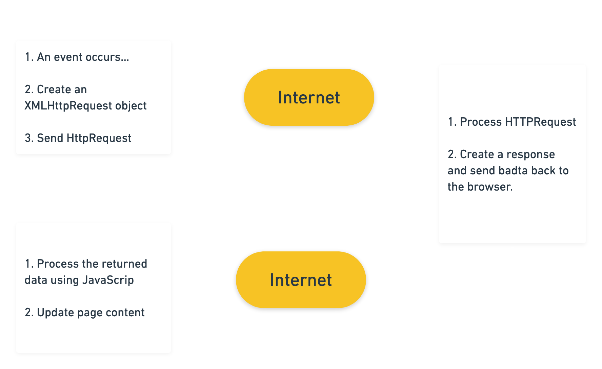
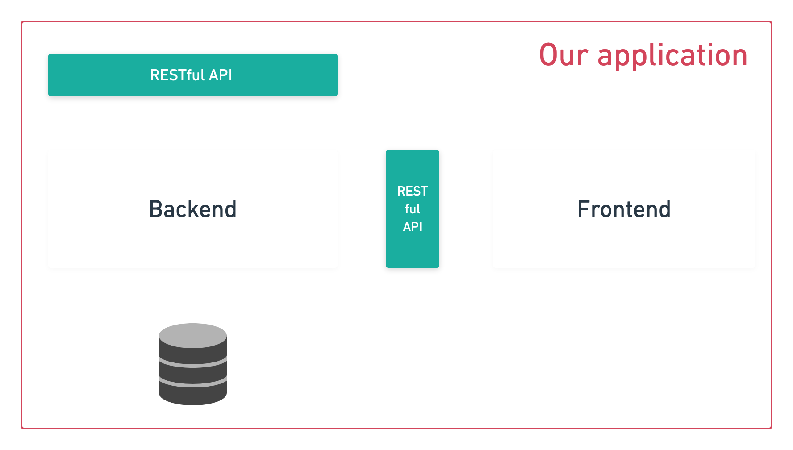
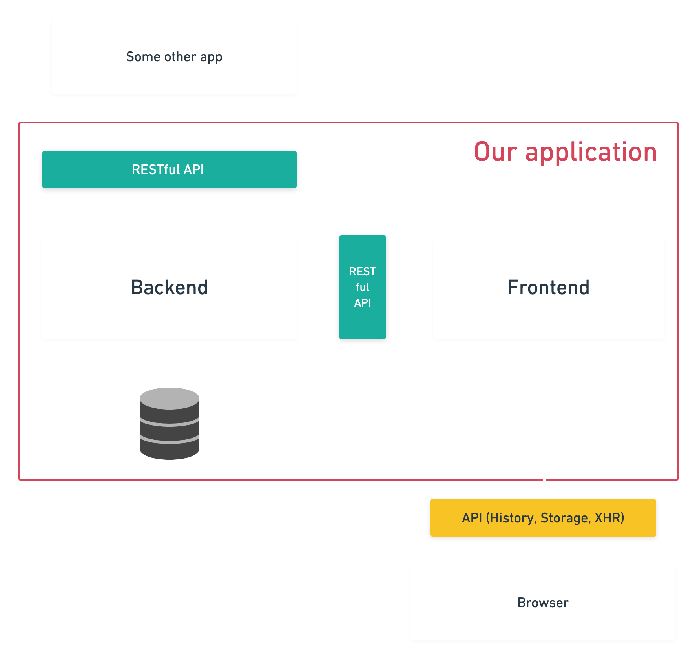
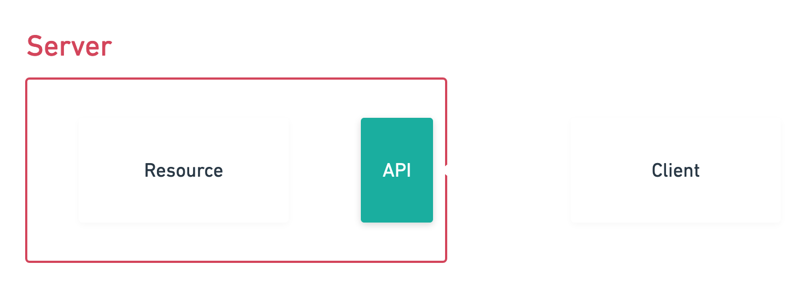
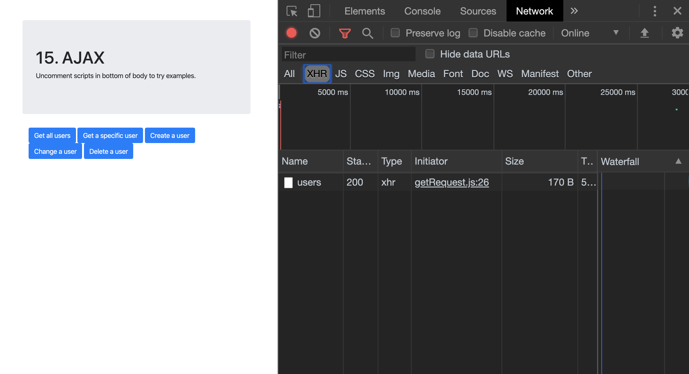
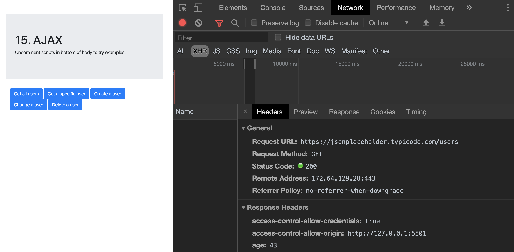

15. JavaScript
AJAX & REST
Asynchronous JavaScript and XML
- Is a collection of client based techniques to fetch web based data asynchronos.
- A browser built-in XMLHttpRequest object (to request data from a web server)
- JavaScript and HTML DOM (to display or use the data)
- AJAX applications might use XML to transport data, but it is equally common to transport data as plain text or JSON text.
With Ajax you can:
- Read data from a web server - after the page has loaded.
- Request data from a server and load it without having to refresh the entire page.
- Update a web page without reloading the page.
- Send data to a web server - in the background.
Synchronous & Asynchronos
- Execute something synchronously = you wait for it to finish before moving on to another task.
- Standing in line waiting for food
- Execute something Asynchronously = you can move on to another task before it finishes.
- Make an order, sit at the table and wait for your food
AJAX examples
- Live search - You enter something into a input and you get alternatives matching.
- Tradera - Auctions and bids are updated continually.
- Login without reload.
How AJAX works
- The browser request data from the server.
- The server responds with data (usally HTML, XML, JSON formats).
- The browser processes the content and adds it to the page.
AJAX flow
Data formats
- When exchanging data between a browser and a server, the data can only be text.
- Servers typically send back:
- HTML - Hyper Text Markup Language.
- XML - Extensible Markup Language.
- JSON - JavaScript Object Notation.
API
Application Programming Interface
What is an API (Application Programming Interface)?
- User interfaces allow humans to interact with programs.
- API's let programs and scripts to talk to each other.
API real world example
Think of an API like a menu in a restaurant. The menu provides a list of dishes you can order, along with a description of each dish. When you specify what menu items you want, the restaurant’s kitchen does the work and provides you with some finished dishes. You don’t know exactly how the restaurant prepares that food, and you don’t really need to. - Chris Hoffman
If I write a script or create some software, websites or web other services, I can decide to open up some of that functionality for others.
Different types of APIs
- Internal computer API (files, camera etc.).
- Browser API (storage, history, location etc.).
- External RESTful API(Getting and sending data remote).
- SOAP etc.
Different types of APIs
Different types of APIs

Different types of APIs
Different types of APIs

REST
- REST is acronym for REpresentational State Transfer.
- REST is a set of of rules about how to use the HTTP protocol.
- RESTful Web services, provide interoperability between computer systems on the Internet.
- When a RESTful API is called, the server will transfer to the client a representation of the state of the requested resource.
REST Architectural Constraints
What is an RESTful API?
- It's an interface or communication protocol between a client and a server.
- It's like a “contract” between the client and the server.
- If the client makes a request in a specific format.
- It will always get a response in a specific format.
- Or initiate a defined action.
Client & resource
- Client — the client is the person or software who uses the API.
- Resource — a resource can be any object the API can provide information about.
- The client then uses the servers API to get the resource.
- The API isn’t the same as the remote server — rather it is the part of the server that receives requests and sends responses.
Client & resource

Client & Resource & API
API URI (Uniform Resource Identifier)

API

API endpoints

Spotify API example
- Client: Your application
- Resource: Songs, playlists or users.
- Each resource has a unique identifier.
- API endpoint -> https://api.spotify.com/v1/artists/234/albums?album_type=SINGLE&limit=10
- Making the http request above will result in that Spotify will give you maximum 10 albums from a specific artist.
Example API's
Using APIs we cannot just ask for and GET data(resources) we can also, send, update and delete data.
These are called CRUD operations
- CREATE
- READ
- UPDATE
- DELETE
CRUD operations
- Depending on in which system they are used they are called different things.

Network tab

Network tab
Network tab
Network tab

Network tab

HTTP Headers
- HTTP headers let the client and the server pass additional information with an HTTP request or response.
- An HTTP header consists of its case-insensitive name followed by a colon (:), then by its value.
- Content-Type: application/json
Modern browsers support two different APIs for making HTTP requests
- XMLHttpRequest (the focus of this lecture).
- Fetch API (comes later in the course).
Common HTTP response status codes
- 200 OK (The request has succeeded)
- 400 Bad Request (This response means that server could not understand the request due to invalid syntax.)
- 401 Unauthorized
- 403 Forbidden
- 404 Not Found (The server can not find requested resource.)
- 500 Internal Server Error (The server has encountered a situation it doesn't know how to handle.)
- Full list
XMLHttpRequest Readystates
- 0 UNSENT Client has been created. ```open()``` not called yet.
- 1 OPENED ```open()``` has been called.
- 2 HEADERS_RECEIVED ```send()``` has been called, and headers and status are available.
- 3 LOADING Downloading; responseText holds partial data.
- 4 DONE The operation is complete.
Check example code on how to use CRUD operations using REST
Access Across Domains
- For security reasons, modern browsers do not allow access across domains.
- Meaning that browsers do not load AJAX responses from servers thats not your own.
- This means that both the web page and the XML file it tries to load, must be located on the same server.
- However there are workarounds.